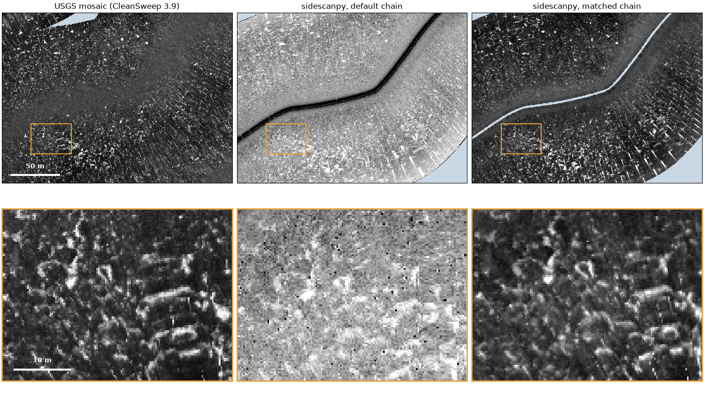

Note
Go to the end to download the full example code.
Same pings, different chains: recreating a vendor product#

The USGS released the raw Klein recordings of its 2015 Grand Bay survey together with the mosaic it made from them in CleanSweep 3.9. The pings are the same; only the processing differs. Put through sidescanpy’s default steps, a line looks little like the published mosaic: the seabed texture is there, but the level, the contrast and even the position of features differ. Every one of those differences comes from a processing choice, and adding the right choices, one recorded step at a time, brings the two together.
This page builds both chains on one window of one line and measures how well each agrees with the mosaic on the same 0.30 m cells. The steps that were added to match CleanSweep are what the published product silently contains.
Data: USGS Grand Bay 2015, doi:10.5066/P9374DKQ, public domain (see Example data). The line is 236 MB and the mosaic 715 MB (287 MB downloaded); the first run downloads them.
Usage: python examples/gallery/plot_vendor_chain.py [output_dir]
# 2026 rshomberg@uri.edu
import json
import sys
import warnings
from pathlib import Path
import matplotlib.pyplot as plt
import numpy as np
import rasterio
from matplotlib.patches import Rectangle
from pyproj import Transformer
from rasterio.windows import Window
from scipy.interpolate import griddata
from scipy.ndimage import gaussian_filter, uniform_filter1d
from scipy.optimize import least_squares
from scipy.spatial import cKDTree
from sidescanpy import datasets
from sidescanpy.io import read_and_convert
from sidescanpy.log import configure_logging
from sidescanpy.processing import correct, course_over_ground, interpolate_aux_onto_pings
from sidescanpy.processing.correct import Step
from sidescanpy.processing.range_correction import RangeCorrectionTable, fit_range_correction
out = Path(sys.argv[1]) if len(sys.argv) > 1 else Path(".")
out.mkdir(parents=True, exist_ok=True)
configure_logging("ERROR")
CELL_M = 0.30 # the mosaic's own cells
HALF_E, HALF_N = 115.0, 85.0 # window half-size around the centre ping (m)
CENTRE_PING = 6000
DETAIL = (-86.0, -56.0, 40.0, 30.0) # detail box: east, north offsets from centre, width, height (m)
The line and the mosaic#
The mosaic is an 8-bit palette GeoTIFF in UTM zone 16N. Its index rises with echo strength (the release draws high indices dark); 255 is no data. It is used here as index values, and drawn with strong echoes bright, like the sidescanpy images below.
survey = read_and_convert([datasets.fetch("usgs_grand_bay_150602202800.xtf")], fmt="xtf")
survey = interpolate_aux_onto_pings(survey) # 1 Hz GPS fixes onto the ping times
line = survey.get_frequency(survey.frequencies[0]).dataset
to_utm = Transformer.from_crs(4326, 32616, always_xy=True)
track_x, track_y = (np.asarray(v) for v in to_utm.transform(line["longitude"].values, line["latitude"].values))
cx, cy = track_x[CENTRE_PING], track_y[CENTRE_PING]
with rasterio.open(datasets.fetch("usgs_grand_bay_mosaic_30cmgray.tif")) as src:
t = src.transform
col0 = int(np.floor((cx - HALF_E - t.c) / CELL_M))
row0 = int(np.floor((t.f - (cy + HALF_N)) / CELL_M))
ncol, nrow = int(round(2 * HALF_E / CELL_M)), int(round(2 * HALF_N / CELL_M))
mosaic = src.read(1, window=Window(col0, row0, ncol, nrow)).astype(float)
mosaic[mosaic >= 255] = np.nan
x0, y1 = t.c + col0 * CELL_M, t.f - row0 * CELL_M # window's west and north edges
bounds = (x0, y1 - nrow * CELL_M, x0 + ncol * CELL_M, y1)
print(f"window {ncol} x {nrow} cells of {CELL_M} m; mosaic has data in {np.isfinite(mosaic).mean():.0%}")
max_range = line.sizes["sample"] * 1500.0 / (2 * line.attrs["sample_rate_hz"])
near = np.flatnonzero(np.hypot(track_x - cx, track_y - cy) < np.hypot(HALF_E, HALF_N) + max_range)
pings = line.isel(ping=slice(near.min(), near.max() + 1)).load()
print(f"pings {near.min()} to {near.max()}")
window 767 x 567 cells of 0.3 m; mosaic has data in 99%
pings 5198 to 6808
The default chain#
Library steps only: altitude from the first bottom return (the recorded altitude is unusable on this line), 20 log R TVG with absorption, slant to ground range over a flat seabed, and a position for every sample. Gridded by linear interpolation in dB onto the mosaic’s cells, and drawn with a plain 2 to 98 % stretch.
def grid_on_mosaic(ds, block=1):
"""Linear interpolation in dB onto the mosaic's cells (row 0 = north).
``block`` consecutive samples are averaged first (in dB)."""
db = ds["backscatter_intensity"].values.astype(float)
x, y = (np.asarray(v) for v in to_utm.transform(ds["longitude_per_sample"].values,
ds["latitude_per_sample"].values))
if block > 1:
n = db.shape[2] // block
with warnings.catch_warnings():
warnings.simplefilter("ignore", RuntimeWarning) # all-NaN blocks (water column) stay NaN
x, y, db = (np.nanmean(a[:, :, : n * block].reshape(*a.shape[:2], n, block), axis=3)
for a in (x, y, db))
ok = np.isfinite(x) & np.isfinite(db) & (x > bounds[0] - 5) & (x < bounds[2] + 5) \
& (y > bounds[1] - 5) & (y < bounds[3] + 5)
px, py, pv = x[ok] - x0, y1 - y[ok], db[ok]
gx, gy = np.meshgrid((np.arange(ncol) + 0.5) * CELL_M, (np.arange(nrow) + 0.5) * CELL_M)
grid = griddata(np.c_[px, py], pv, (gx, gy), method="linear")
dist, _ = cKDTree(np.c_[px, py]).query(np.c_[gx.ravel(), gy.ravel()], distance_upper_bound=4.0)
grid[dist.reshape(grid.shape) > 3.0] = np.nan
return grid
default = correct(
pings, ["bottom_track", "tvg", "geometric", "georef"],
{"bottom_track": {"replace": "all", "smooth_pings": 5}, "tvg": {"spreading_loss_db": 20.0}},
)
default_db = grid_on_mosaic(default)
lo, hi = np.nanpercentile(default_db[default_db > -110], [2, 98]) # above the no-echo floor
default_idx = 254 * np.clip((default_db - lo) / (hi - lo), 0, 1)
The matched chain#
The same pings with steps added, each one a choice CleanSweep made and the release does not publish as such:
Heading from the course over ground. The towfish compass and the track disagree by a few degrees, which turns the swath about the track.
Sensor offset. The release’s metadata puts the towfish 1.85 m to starboard and 0.20 m forward of the GPS antenna; the
laybackstep moves the positions there.Blank the nadir. CleanSweep leaves no water column in its mosaic: samples nearer than 4 m to the track become no data. (The mosaic fills that strip from the neighbouring lines; here it stays empty.)
Range correction fitted to the mosaic. CleanSweep applies its own gain against range (an angle-varying gain). A curve fitted on these pings flattens the level against range, and a second part, taken from the mosaic’s level against range, stands in for CleanSweep’s.
Block mean across track. Twelve samples are averaged before gridding, as smooth as the mosaic’s texture.
Display fitted to the mosaic. dB to index by a stretch and a gamma fitted so the two histograms match.
The two custom steps go through correct()
like the built-in ones, so they land in processing_history.
def heading_from_cog(ds, *, half_window_s=5.0):
"""Use the course over ground as ``heading_deg``."""
return ds.assign(heading_deg=("ping", course_over_ground(ds, half_window_s=half_window_s).astype(np.float32),
ds["heading_deg"].attrs))
def blank_nadir(ds, *, min_ground_range_m=4.0, floor_db=-110.0):
"""Set the water column, samples within ``min_ground_range_m`` of the track and the no-echo floor to NaN."""
keep = (ds["ground_range_m"] >= min_ground_range_m) & (ds["backscatter_intensity"] > floor_db)
return ds.assign(backscatter_intensity=ds["backscatter_intensity"].where(keep))
cog = course_over_ground(pings, half_window_s=5.0)
turn = (cog - pings["heading_deg"].values + 180) % 360 - 180
print(f"course over ground minus recorded heading: median {np.nanmedian(turn):+.1f} deg")
matched = correct(
pings,
[Step("heading_from_cog", heading_from_cog), "layback", "bottom_track", "tvg", "geometric",
Step("blank_nadir", blank_nadir), "georef"],
{"layback": {"layback_m": 0.0, "tow_point_aft_m": -0.20, "tow_point_starboard_m": 1.85,
"position_source": "ship"},
"bottom_track": {"replace": "all", "smooth_pings": 5},
"tvg": {"spreading_loss_db": 20.0}},
)
def fit_display(db, idx):
"""Stretch and gamma, index = 254 * clip((dB - lo) / (hi - lo)) ** gamma, matching the histograms."""
common = np.isfinite(db) & np.isfinite(idx)
q = np.linspace(0.001, 0.999, 999)
qdb, qidx = np.quantile(db[common], q), np.quantile(idx[common], q)
fit = least_squares(lambda p: 254 * np.clip((qdb - p[0]) / (p[1] - p[0]), 0, 1) ** p[2] - qidx,
x0=[qdb[0], qdb[-1], 1.0], bounds=([qdb[0] - 40, qdb[0], 0.1], [qdb[-1], qdb[-1] + 40, 10]))
return tuple(float(v) for v in fit.x)
def to_index(db, lo, hi, gamma):
return 254 * np.clip((db - lo) / (hi - lo), 0, 1) ** gamma
def mosaic_curve(ds, display):
"""Per 1 m of ground range: the mosaic's level (index back to dB) minus ours."""
lo, hi, gamma = display
x, y = (np.asarray(v).ravel() for v in to_utm.transform(ds["longitude_per_sample"].values,
ds["latitude_per_sample"].values))
db, ground = ds["backscatter_intensity"].values.ravel(), ds["ground_range_m"].values.ravel()
col, row = np.floor((x - x0) / CELL_M), np.floor((y1 - y) / CELL_M)
inside = np.isfinite(db) & (col >= 0) & (col < ncol) & (row >= 0) & (row < nrow)
idx = mosaic[row[inside].astype(int), col[inside].astype(int)]
db, ground = db[inside], ground[inside]
ok = np.isfinite(idx)
level = lo + (hi - lo) * (np.clip(idx[ok], 0.5, 254) / 254) ** (1 / gamma)
edges = np.arange(0.0, 101.0)
which = np.digitize(ground[ok], edges) - 1
centres = edges[:-1] + 0.5
extra = np.full(centres.size, np.nan)
counts = np.bincount(which, minlength=centres.size)[: centres.size]
for j in np.flatnonzero(counts > 2000):
extra[j] = np.median(level[which == j]) - np.median(db[ok][which == j])
good = np.isfinite(extra)
extra = uniform_filter1d(np.interp(centres, centres[good], extra[good]), 5, mode="nearest")
return centres, extra - np.average(extra, weights=np.maximum(counts, 1)) # level is the display's job
# A flat curve first, then the mosaic's part on top of it (one round).
ranges, flat, meta = fit_range_correction(matched, bin_width_m=1.0)
table = RangeCorrectionTable()
table.add_curve(matched.attrs["freq_hz_start"], ranges, flat, meta)
first = correct(matched, ["range_correction"], {"range_correction": {"table": table}})
display = fit_display(grid_on_mosaic(first, block=12), mosaic)
centres, extra = mosaic_curve(first, display)
table.add_curve(matched.attrs["freq_hz_start"], ranges,
list(np.asarray(flat) + np.interp(ranges, centres, extra)),
dict(meta, plus="mosaic level against ground range, 1 m bins"))
matched = correct(matched, ["range_correction"], {"range_correction": {"table": table}})
matched_db = grid_on_mosaic(matched, block=12)
display = fit_display(matched_db, mosaic)
matched_idx = to_index(matched_db, *display)
print("display: {:.1f} to {:.1f} dB, gamma {:.2f}".format(*display))
for record in json.loads(matched.attrs["processing_history"]):
print(record["step"])
course over ground minus recorded heading: median -7.2 deg
display: 52.9 to 87.2 dB, gamma 1.93
interpolate_aux
heading_from_cog
layback
bottom_track
tvg
geometric
blank_nadir
georef
range_correction
Agreement with the mosaic#
On the cells all three images cover:
NCC: the normalized cross-correlation of the displayed image with the mosaic index, at 0.30 m and after a 1.5 m Gaussian smoothing.
Position offset: the shift that best lines up the band-passed images (seabed texture between 0.3 and 5 m).
Histogram overlap: the shared area of the two gray-level histograms (1 = the same distribution).
common = np.isfinite(mosaic) & np.isfinite(default_idx) & np.isfinite(matched_idx)
def ncc(a, b, sigma_m=0.0):
if sigma_m:
a, b = (gaussian_filter(np.where(common, v, 0), sigma_m / CELL_M) for v in (a, b))
u, v = a[common] - a[common].mean(), b[common] - b[common].mean()
return float((u * v).sum() / np.sqrt((u * u).sum() * (v * v).sum()))
def band_pass(a):
filled = np.where(common, a, 0.0)
weight = common.astype(float)
smooth = lambda s: gaussian_filter(filled, s) / np.maximum(gaussian_filter(weight, s), 1e-6) # noqa: E731
return np.where(common, smooth(1.0) - smooth(5.0 / CELL_M), 0.0)
def offset_m(a, b, max_m=8.0):
"""Length of the shift of ``a`` that best matches ``b`` (band-passed, masked)."""
A, B = band_pass(a), band_pass(b)
best, shift = -np.inf, (0, 0)
reach = int(max_m / CELL_M)
for dy in range(-reach, reach + 1):
for dx in range(-reach, reach + 1):
r = (np.roll(A, (dy, dx), axis=(0, 1)) * B).sum()
if r > best:
best, shift = r, (dy, dx)
return float(np.hypot(*shift) * CELL_M)
def overlap(a, b):
ha, _ = np.histogram(a[common], np.linspace(0, 255, 52))
hb, _ = np.histogram(b[common], np.linspace(0, 255, 52))
return float(np.minimum(ha / ha.sum(), hb / hb.sum()).sum())
rows = {
"NCC, 0.30 m cells": (ncc(default_idx, mosaic), ncc(matched_idx, mosaic), "{:.2f}"),
"NCC, 1.5 m smoothed": (ncc(default_idx, mosaic, 1.5), ncc(matched_idx, mosaic, 1.5), "{:.2f}"),
"position offset (m)": (offset_m(default_idx, mosaic), offset_m(matched_idx, mosaic), "{:.1f}"),
"histogram overlap": (overlap(default_idx, mosaic), overlap(matched_idx, mosaic), "{:.2f}"),
}
print(f"{'':<22}{'default':>9}{'matched':>9}")
for name, (a, b, fmt) in rows.items():
print(f"{name:<22}{fmt.format(a):>9}{fmt.format(b):>9}")
default matched
NCC, 0.30 m cells -0.02 0.23
NCC, 1.5 m smoothed 0.09 0.45
position offset (m) 3.0 0.3
histogram overlap 0.15 0.97
The three images#
Top, the window; bottom, the orange detail box (40 by 30 m) at full resolution. Pale blue is no data.
NODATA, BOX = "#c9d6e3", "#e8a33d"
cmap = plt.get_cmap("gray").copy()
cmap.set_bad(NODATA)
extent = (bounds[0] - cx, bounds[2] - cx, bounds[1] - cy, bounds[3] - cy)
images = [(mosaic, "USGS mosaic (CleanSweep 3.9)"),
(default_idx, "sidescanpy, default chain"),
(matched_idx, "sidescanpy, matched chain")]
fig, axes = plt.subplots(2, 3, figsize=(15, 8.4), height_ratios=[HALF_N / HALF_E, DETAIL[3] / DETAIL[2]],
layout="constrained")
for k, (image, title) in enumerate(images):
for ax in axes[:, k]:
ax.imshow(image, cmap=cmap, vmin=0, vmax=254, extent=extent, interpolation="nearest")
ax.set_xticks([])
ax.set_yticks([])
axes[0, k].set_title(title)
axes[0, k].add_patch(Rectangle(DETAIL[:2], DETAIL[2], DETAIL[3], fill=False, ec=BOX, lw=1.5))
axes[1, k].set_xlim(DETAIL[0], DETAIL[0] + DETAIL[2])
axes[1, k].set_ylim(DETAIL[1], DETAIL[1] + DETAIL[3])
for spine in axes[1, k].spines.values():
spine.set_edgecolor(BOX)
spine.set_linewidth(2)
for ax, (x, y, length, label) in [(axes[0, 0], (-HALF_E + 8, -HALF_N + 8, 50, "50 m")),
(axes[1, 0], (DETAIL[0] + 2, DETAIL[1] + 2, 10, "10 m"))]:
ax.plot([x, x + length], [y, y], color="white", lw=3, solid_capstyle="butt")
ax.text(x + length / 2, y + length / 10, label, color="white", ha="center", va="bottom", fontweight="bold")
fig.savefig(out / "vendor_chain.png", dpi=150)
Reading the result#
The default chain is not wrong: it is a different product of the same pings. It keeps the water column (the dark band along the track), lets the level rise and fall with range, and sits a few meters and a few degrees off the mosaic. Each added step removes one of those differences, and together they bring the correlation with the mosaic from about zero to clearly positive and the histograms into line.
Some mismatch remains, and it is not ours to remove: the mosaic in this
window also holds parts of other lines, blended by rules the release
does not publish. A vendor product is one chain’s answer; without the
chain, it cannot be reproduced, only approached. With sidescanpy the
chain is the record: processing_history lists every step above and
its parameters, so the matched product can be made again exactly.
Four published chains, four looks; one recorded chain, one scale turns the comparison around: one
recorded chain applied to four agencies’ recordings.
Total running time of the script: (1 minutes 38.041 seconds)